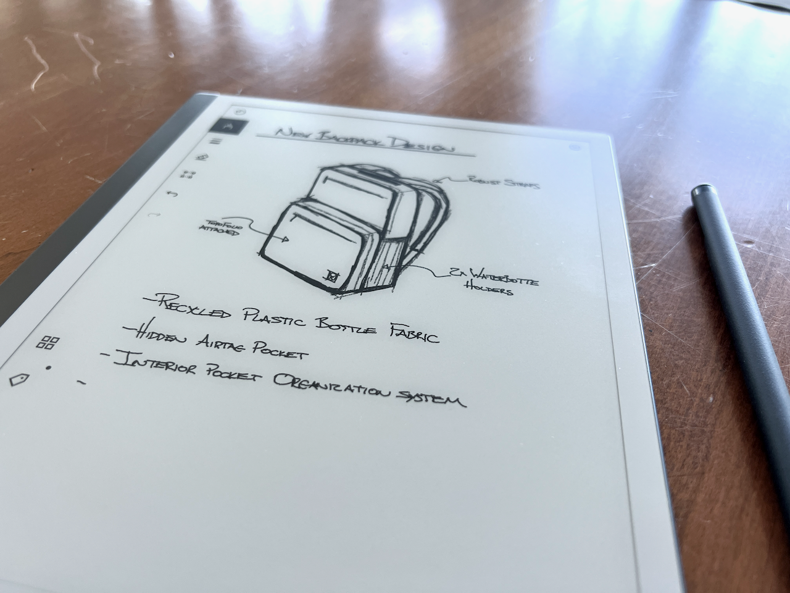

Highlighted Features

Feature 1
All your notes organised

Feature 2
Paper-like writing and reading

Feature 3
Take handwritten notes, read and review documents
Let's Feel the Digital Paper
E-ink, or electronic ink, is a display technology designed to replicate the appearance of traditional ink on paper. Unlike conventional displays, E-ink screens are reflective, relying on ambient light for visibility without emitting light themselves. Notably, these displays feature low power consumption, requiring energy only when the screen content changes. This characteristic contributes to their energy efficiency and extended battery life. E-ink technology provides high contrast and wide viewing angles, ensuring readability in various lighting conditions, including direct sunlight. The flexibility and lightweight nature of E-ink screens allow for innovative design possibilities, and some are even rollable or foldable. A distinctive feature known as the "memory effect" enables displayed images to remain visible even when power is off. Commonly found in e-book readers, electronic shelf labels, and signage, E-ink's paper-like readability makes it a preferred choice in applications where a low-power and easily readable display is essential.
All your notes organised
Paper-like writing and reading
Take handwritten notes, read and review documents